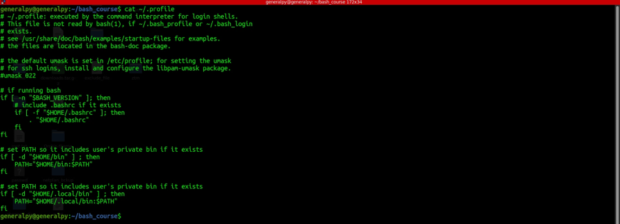

PATH is a special system variables which tells terminal where to look for executable files when a command is run. PATH is nothing but a list of different paths.
When we enter a command, terminal will use PATH variable to determine which directory to search for that command.
To print your PATH variable's value use
echo "$PATH"
.profile file is used by the terminal when it loads to load configuration.
We can use command :
export PATH="$PATH:out_new_path"
To add our new path to current path. Here we used $PATH before our new path because if accidentaly we create a script with same name as some system script, the system script will be called first as its source directory will be at left and it will save us from system wide trouble.
Using above command will only add path for current session, to preserve path, add above line in .profile file.
Original .profile

After changing the .profile file, either restart the terminal or use source command with location of .profile file.
Our script can be executed from anywhere now.
| Linked file: 10.1 Bash Script Structure Cheatsheet.pdf |